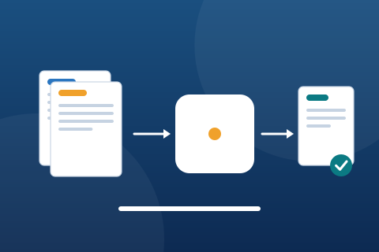
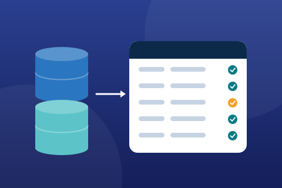
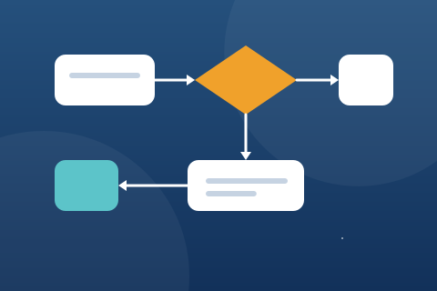
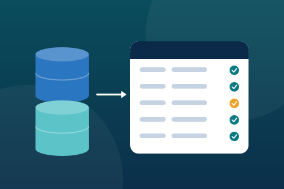

Featured articleIndustry trends
Five Trends Shaping Business Process Outsourcing This Year
From outcome-based contracts to smaller, more specialised delivery centres, these five shifts are changing how buyers and providers work together.
Alturis blog
Practical articles from our delivery leaders on customer experience, outsourcing strategy, automation, data management, workforce planning and operational efficiency.
From outcome-based contracts to smaller, more specialised delivery centres, these five shifts are changing how buyers and providers work together.
Satisfaction scores are only the start. Here is a balanced scorecard that keeps outsourced support accountable to the customer, not just the queue.
A transition succeeds or fails long before go-live. These ten questions expose the gaps that most often derail a first outsourcing programme.

Automation works best on rules-based steps. The trick is knowing where a person should stay in the loop — and designing hand-offs that do not slow anything down.

Data quality is not a one-off clean-up. A simple framework of rules, owners and thresholds keeps operational records trustworthy after the project ends.
Cutting seconds off average handle time is easy. Doing it without pushing customers into repeat contacts requires attention to why calls take as long as they do.
Good workforce management is a chain: a credible forecast, a schedule that fits it, and daily adherence. Here is how the chain holds together.

A clear process map reduces transition risk more than almost any other preparation. This guide covers what to capture and how detailed to go.
The best escalation feels like one continuous conversation. Here is how to hand off complex cases without making customers start again.
Dedicated teams offer depth; blended teams offer flexibility. Which suits your volumes, complexity and budget — and when should you combine both?

Security due diligence should be specific. Use this checklist to test physical, technical and people controls before you sign.
Multiple delivery centres offer resilience, but only if the plan is rehearsed. What a credible continuity programme looks like in practice.
No article matches your search. Try another keyword or topic.
Our delivery leaders are happy to discuss how the practices in these articles could apply to your programme.